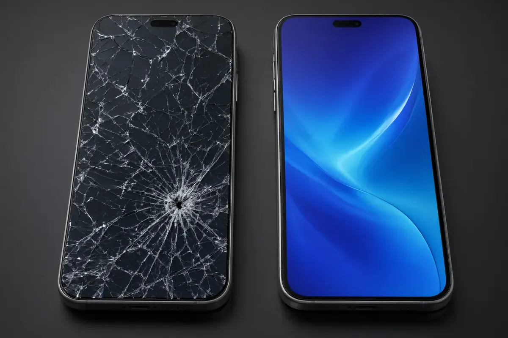

¿Cuánto cuesta cambiar la pantalla de un celular en Tapachula?
La respuesta corta: entre $600 y $5,200 pesos, y la diferencia no depende del taller sino de dos cosas: tu modelo y la calidad de la pieza que aceptes. Aquí están los rangos reales, cuánto tarda y las cinco formas en que te pueden cobrar de más.

1. Rangos de precio por calidad de pieza
En Tapachula vas a encontrar tres niveles de precio para el mismo servicio. La diferencia no es la mano de obra (suele ser la misma): es la pieza.
| Calidad de pieza | Rango típico | Para quién es |
|---|---|---|
| Incell / TFT económica | $600 – $1,700 | Gama media, equipos de trabajo, presupuesto ajustado |
| OLED / AMOLED premium | $1,500 – $4,200 | Gama media-alta que quieres conservar 2 años más |
| Original o servicio autorizado | $2,000 – $5,200 | Gama alta reciente, iPhone Pro Max, pantallas curvas |
| Diagnóstico y cotización | GRATIS | Siempre, antes de autorizar cualquier trabajo |
Por qué publicamos rangos y no un precio fijoLos repuestos de telefonía se importan y su costo cambia cada semana según disponibilidad, aduana y tipo de cambio. Un precio fijo publicado sería mentira en dos meses. Lo correcto es que el taller te dé un precio cerrado por escrito después del diagnóstico, y que ese precio no se mueva aunque la pieza suba.
2. Precios por marca y modelo
Estos son los rangos que manejamos en el taller para cambio de pantalla con pieza Incell y con pieza premium. Tu modelo exacto puede quedar por debajo o por encima; el cotizador del sitio te da el número en 60 segundos.
| Marca | Incell económica | Premium / OLED | Tiempo |
|---|---|---|---|
| Apple iPhone (8 a 16) | $1,100 – $1,700 | $2,000 – $4,600 | 40–60 min |
| Samsung Galaxy A | $700 – $1,300 | $1,600 – $2,900 | 40–70 min |
| Samsung Galaxy S / Note / Z | $1,200 – $1,900 | $2,200 – $5,200 | 60–90 min |
| Xiaomi / Redmi / Poco | $650 – $1,300 | $1,200 – $2,600 | 40–60 min |
| Motorola | $700 – $1,400 | $1,300 – $2,600 | 40–60 min |
| Honor / Oppo / Realme / Vivo | $700 – $1,400 | $1,200 – $2,500 | 45–75 min |
| Huawei | $700 – $1,400 | $1,300 – $2,600 | 45–75 min |
| Otras marcas | $600 – $1,500 | $1,100 – $2,800 | Según pieza |
Regla práctica: dentro de cada marca, los modelos Pro, Pro Max, Ultra, Plus, plegables y las dos generaciones más recientes están en la parte alta del rango (hasta 18% más), y los modelos de hace cuatro años o más, en la parte baja (hasta 15% menos).
3. Incell, OLED u original: cuál te conviene
Esta es la decisión que más afecta tu bolsillo y tu experiencia diaria. Comparativa honesta:
| Característica | Incell económica | OLED / Premium |
|---|---|---|
| Fidelidad de color | Buena, colores menos vivos | Excelente, negros puros |
| Brillo bajo el sol | Moderado | Muy alto |
| Consumo de batería | Hasta 30% más | Bajo (píxeles que se apagan) |
| Grosor y ajuste al marco | Ligeramente más gruesa | Idéntico al original |
| Huella bajo pantalla | En varios modelos deja de funcionar | Funciona |
| Respuesta táctil | Correcta, a veces menos fluida | Como de fábrica |
| Precio | Muy económico | 2 a 3 veces más |
Nuestra recomendación: si tu teléfono es gama alta, tiene menos de tres años o piensas conservarlo, instala premium. Si es un gama media de repuesto, un equipo de trabajo o vas a cambiarlo pronto, la Incell cumple perfectamente y te ahorra miles de pesos. En el taller te mostramos las dos piezas físicamente antes de decidir: no elegimos por ti.
4. Cuánto tarda de verdad
- 40 a 60 minutos cuando hay pieza en stock para tu modelo. Puedes esperar en el local.
- 24 a 48 horas si la pieza se pide por encargo (modelos poco comunes o pantallas curvas).
- 60 a 90 minutos en equipos con pantalla pegada al marco o con sensor de huella integrado, porque la instalación exige más cuidado.
- Más tiempo si además hay daño en el marco, en el flex de la pantalla o en el conector: se avisa antes, con foto y precio.
Si un taller te promete 15 minutos para cualquier modelo, probablemente está instalando la pieza más barata disponible sin probar sensores, ni brillo, ni táctil completo. Si te dice tres días sin explicarte por qué, probablemente no tiene stock ni proveedor ágil.
5. Qué debe incluir el precio que te cotizan
Un precio serio de cambio de pantalla incluye:
- La pieza (módulo completo: cristal + digitalizador + display).
- Mano de obra y desarme con herramienta adecuada.
- Adhesivo sellador nuevo (no reutilizar el viejo: entra polvo y humedad).
- Limpieza de marco y de conectores.
- Pruebas: táctil en las cuatro esquinas, brillo, sensores de proximidad y luz, cámara frontal, bocina de llamadas y carga.
- Garantía por escrito con folio, no de palabra.
- Devolución de tu pieza vieja.
Si alguno de esos puntos no está incluido, pídelo por escrito antes de dejar el equipo.
6. Cinco formas en que te cobran de más
- “Está dañada la placa” como respuesta automática cuando la falla era un flex mal conectado. Una falla de placa se demuestra con multímetro y microscopio, no de palabra.
- Cobrar “limpieza” o “revisión” aparte después de haber dicho que el diagnóstico era gratis.
- Vender pieza premium e instalar Incell. Por eso exigimos devolverte tu pieza vieja y mostrarte el empaque de la pieza nueva.
- Subir el precio al entregar con cargos por adhesivo, pruebas o “impuestos”. El precio cerrado se da antes, por escrito.
- Pedir tu contraseña “para probar la pantalla”. No se necesita: se prueba desde la pantalla de bloqueo o la llamada de emergencia.
Señal de alerta fuerteSi te niegan folio de entrada, precio por escrito, garantía o la devolución de tu pieza, no dejes tu equipo. Esas cuatro cosas son la diferencia entre un taller y un improvisado.
7. ¿Se puede cambiar solo el cristal y ahorrar?
En la mayoría de los teléfonos actuales el cristal, el digitalizador y el display vienen unidos de fábrica como un solo módulo. Separar el cristal roto requiere máquina de laminado, cámara de vacío y experiencia; si queda mal, entran polvo y burbujas, el táctil falla en zonas y no hay garantía posible. Por eso los talleres serios instalan el módulo completo: es más caro de pieza, pero mucho más confiable y sí se puede garantizar.
Cuando sí conviene separar cristal: en pantallas originales de gama alta donde el display sigue perfecto y el cliente acepta el riesgo y el tiempo extra (2 a 4 días). Pídelo explícitamente y por escrito.
8. Preguntas frecuentes
¿Cuánto cuesta cambiar la pantalla de un iPhone en Tapachula?
Entre $1,100 y $1,700 MXN con pieza Incell, y entre $2,000 y $4,600 MXN con pieza premium OLED, según el modelo. Los Pro Max y las generaciones más recientes están en la parte alta.
¿Pierdo mi información al cambiar la pantalla?
No. El cambio de pantalla no toca la memoria del equipo. Aun así, recomendamos respaldar antes de cualquier reparación: si algo sale mal durante el desarme, tu información está a salvo. Ofrecemos respaldo opcional por $150.
¿La pantalla nueva pierde el True Tone o la huella?
Con pieza premium y programación del chip de la pantalla original, el True Tone se conserva en iPhone. La huella bajo pantalla se conserva con piezas OLED compatibles; con Incell suele perderse en modelos que la llevan integrada al display. Te lo decimos antes de instalar, no después.
¿Vale la pena reparar un teléfono de hace 4 años?
Depende del valor de reventa. Si la reparación cuesta más del 40% de lo que vale el equipo usado, normalmente conviene cambiarlo. Te hacemos esa cuenta sin compromiso.
Obtén tu precio exacto en 60 segundos
Usa nuestro cotizador: eliges marca, modelo y calidad de pieza, y ves el rango al instante. Luego generas un boleto con folio y código QR para presentarlo en el taller o dárselo al mensajero si pides recolección a domicilio.
Precios vigentes en octubre de 2026 para Tapachula, Chiapas. Los costos de repuestos cambian con la importación; confirma el precio del día por WhatsApp antes de acudir. Esta guía es informativa y no constituye una cotización formal.